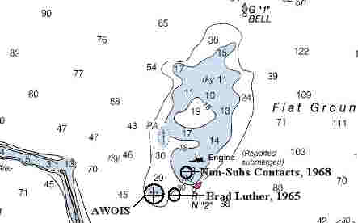

Link Index
MWDC
Home Page
Shipwrecks Page
Albert Galatin
Alice M. Colburn
Alice M.
Lawrence
Ardandhu
Barge and Crane
California
Chelsea
Chester Poling
City of
Salisbury
Corvan
Dixie Sword
Edward Rich
French Van
Gilder
Henry Endicott
Herbert
Herman Winter
Hilda Garston
HMCS St. Francis
James
Longstreet
John Dwight
Kershaw
Kiowa
Lackawanna
Lunet
Mars
Pemberton
Pendleton
Pinthis
Port Hunter
Pottstown
Romance
Seaconnet
Trojan
USS Grouse
USS New
Hampshire
USS Triana
USS Yankee
USS YSD
Vineyard Sound
Lightship |
Description:
Freighter; Steel
Dimensions: length
- 422.8 ft. , width - 57
ft. ; depth - 34.8 ft.
Tonnage: gross - 7198, other
-
Propulsion: Steam;
Single propellor
Machinery:
Cargo:
Empty
The Shipwreck
Date Sunk: April 2, 1946
Cause:
Stranded
Location: Cape Ann, on the Flat Ground off Rockport.
Coordinates: Latitude,
42o - 40' - 38"N Longitude,70o - 35' - 03"W
Loran:
The evening of April 1, 1946, found the Charles
S. Haight off Cape Ann, returning "in ballast" (without cargo) to New York
after delivering coal to Newport, England. A strong southeast wind made the going slow,
visibility was poor and sea's rough. At the helm Richard Young of Detroit, Michigan,
reported the freighter on a course of 215 degrees traveling in a southwesterly direction.
At 12:07AM, April 2, the Haight suddenly ground to a halt.
Unequipped with radar and with poor visibility, the southeasterly winds had blown the
freighter inshore, off of her course and onto the Flatground inside the Dry Salvages, 1.5
miles east of Rockport.
Without a cargo to weigh her down, the steamer slid high on the ledge
and resisted all attempts to free her. The vessel radioed that her double-bottomed hull
had been punctured near No.5 hold but otherwise the rest of the freighter was intact.
Heavy seas pounded the stranded steamer against the ledge and soon water was flooding the
rest of ship. At first the pumps kept up with the incoming deluge. However, by forenoon
Captain Mano ordered 29 of his crew to the lifeboats as rising waters in the engine room
threatened a boiler explosion. For two hours the crewmembers sat it out until the danger
passed. At 3:30PM they were removed to the Coast Guard Cutter Ojibwa, standing by
the vessel in case she broke up in the heavy seas.
By late afternoon seas had moderated and the Haight stopped
pounding, but the damage was done. The vessel had been pushed atop the ledge to the
midship section. The holds were flooded and there was 30 feet of water in her engine room.
A representative of the vessel's Boston agents said the ship was "dead".
April 5th the Boston Papers reported there was no hope of
saving the grounded vessel as she was breaking in two at the No.4 hold.
By April 9th the Charles S. Haight was considered a
total loss.
Back to Top
Dive Site Conditions
Depth in feet: maximum - 30 ; minimum
- 10
Visibility in feet:
average - 20
Over the years Charles S. Haight's
remains were reduced until only a vestige of her huge triple expansion steam engine could
be seen at low tide. This can be found on the west side of the Flat Ground.
Between high and low tides strong currents flow over this wreck making,
even, anchoring difficult. I first dove this wreck in August of 1985. At that time of the
year it was hard to discern rock from wreck given the thick mat of algae. Most of the
"wreckage" consisted of steel beams and plates scattered atop the ledge. Some
brass objects were to be found corroded into crevices in the ledge. Mostly nuts and bolts
we did, however, recover what could be the key to a lifeboat launching apparatus. Hank
Keatts, 1988, reported that remains of the bow could be found "One half the
distance between the engine and the breakwater."
Click on the image to go to the MapTech Map Server,
for additional navigation information. 
Back to Top
Historical Background
Constructed: year - 1944;
where - Brunswick, Georgia
builder
-
Construction details: Liberty ship
Crew: 49 ;
Master: Capt. Joseph.A. Mano
Owners:
U.S. War Shipping Administration; Peabody &
Lane, Boston Agents;
Operated by Marine Transport Lines
Home or Hailing Port: Brunswick, Georgia
Former Name(s), date(s):
Official number: 246541 Country: U.S.A.
Other Comments: One
of over 2700 Liberty Ships built during the Second World War, this class of vessel made a
significant contribution to the war effort in the transport supplies.
Back to Top
Salvage
Merritt Chapman
& Scott, New York, began salvage operations on the vessel, within days of her
stranding. She was not, at the time, considered a hazard to navigation.
Much of this vessel was removed as scrap by various salvers over the
years. In 1958, Shipwreck Researcher/Writer Brad W. Luther reported. "The bow
and stern broke away from the mid-section and the stern disappeared from view. The bow
projects about 10 feet above water and the mid-section was 40 feet above water at last
report" By 1965 he reported the vessel had been reduced until only the main
engine was above water.
Today only a remnant of the freighters huge triple expansion steam
engine bares at low water.
Back to Top
Sources:
Boston Globe; April 2, 3, 4, 5, 1946
Fisherman Magazine; August 22, 1991
MapTech
Mapserver
Merchant Vessels of the United States; 1947
Merchant Vessels of the United States, Vessels Lost Chapter; 1948
New England's Legacy of Shipwrecks; Keatts, 1988
New England Shipwrecks, Luther; 1967
New York Times; April 3, 4, 9, 1946
Wrecks Below; B.W. Luther, 1958
Back to Top
These files are under construction. Any
information, specifically dive site related, would be greatfully appreciated.
Send comments to: Chris Hugo
Copyright © 2000 by Christopher C. Hugo
Massachusetts Board of Underwater Archaeological Resources
All Rights Reserved
|